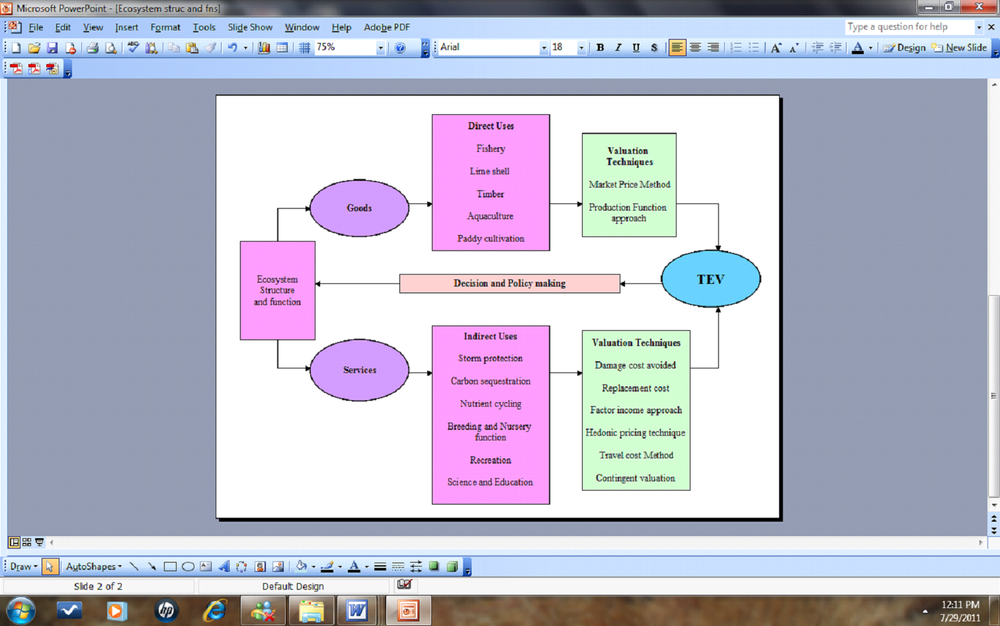
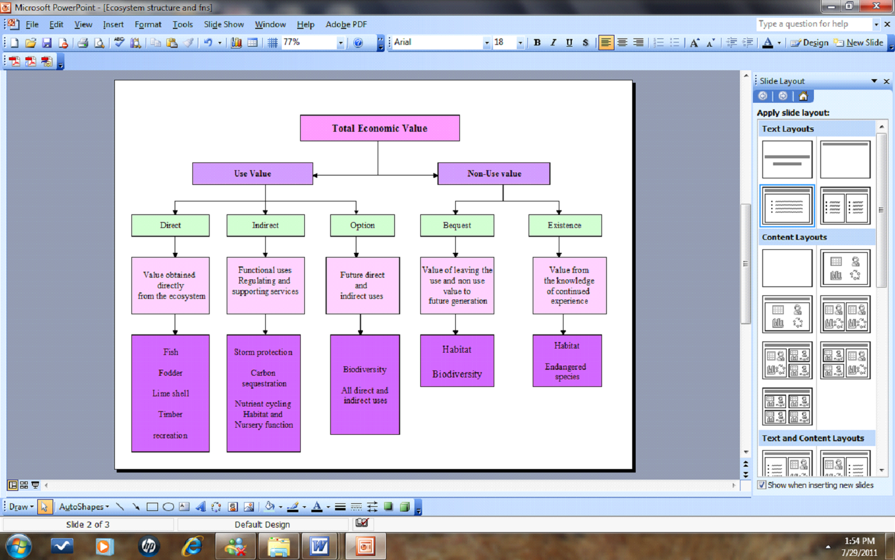

|
Introduction
Ecological values refer to the level of benefits and
services provided with the complex interactions among
the biotic and abiotic components to sustain humans
(Ramachandra et al. 2018a; Ramachandra et al. 2018b;
Ramachandra et al. 2018c). Ecosystem services include
services and benefits such as food, erosion control;
climate regulation; water purification; bioenergy, etc.
and are very crucial for the biota’s survival
(Ramachandra et al. 2018; Ramachandra et al. 2018). The
structural components of an ecosystem include physical
features (such as land cover, water, sediment and soil
profile, the gradient of conditions in water body),
biotic compositions (like species, number of individuals
and their biomass), etc. Interactions between these
elements, i.e., the flow of nutrients, energy, etc.
between different ecosystems constitute the functional
aspects of an ecosystem. Ecosystems can be broadly
categorized as aquatic and terrestrial ecosystems, on
the basis of their major source and sink of nutrient,
i.e., water or land (Ramachandra et al. 2018a; 2018b).
Aquatic ecosystems with rich nutrient contents is
substantially different from terrestrial ecosystems and
both these ecosystems are dependent upon each other, as
there is an overlap of the functional boundary between
the two, irrespective of the physical boundaries
(Ramachandra et al. 2018c).
An estuary is a dynamic zone between land and Sea
with the salinity transitional to that of marine and
fresh water, which makes them unique in their ecological
and biological functions (Anoop et al. 2008). Estuaries
support wide range of terrestrial and aquatic life with
the distinctive ecological, geological, and biological
domains of vital importance (Wilson, and Farber 2005).
These are major specialized ecosystems where organic
matter is built up in large quantities and offers ideal
biotic conditions to sustain considerable aquatic
population (Boominathan et al. 2008; Rao and Suresh
2002). Estuaries are the transition zones with salinity
gradient where the water quality change from fresh water
to saline as landscapes change from land to sea. These
regions are protected by mangroves, reefs, barrier
islands and land, mud or sand that define an estuaries
seaward boundary and shield an estuary from the ocean
waves, winds and storms (Ramachandra at al. 2018d). Most
of the Western Ghats Rivers join Arabian Sea forming
productive estuaries, which sustains the livelihood of
millions of people.
Fresh water influx and density difference between
the two merging water entities, a constant replenishment
of nutrients and versatility in their structure make it
a nursery ground for many marine organisms (Ramachandra
2018e). Diverse estuarine habitats include shallow open
waters, fresh water and salt marshes, sandy beaches, mud
and sand flats, rocky shores, mangrove forests, river
deltas, tidal ponds, sea grass beds, etc. These habitats
are essential for the survival of biota, which depend on
the estuarine ecosystem for breeding, feed, living, etc.
Marine organisms including fish species and oysters,
during various stages of their lifecycle, depend on the
estuarine ecosystem (Bhat et al. 2010; Ramachandra et
al. 2018d; Ramachandra et al. 2018c; Wilson and Farber
2005), while other species (salmon and shrimp) on a
seasonal basis for reproduction and growth depend on
estuaries (Wilson and Farber 2005).
Estuaries supports local livelihood through
employment, goods (fish, fodder, sand, salt, etc.) and a
variety of ecological services (Boominathan et al. 2008;
Thomson, 2003; Wilson and Farber 2005). Majority of
estuarine communities are dependent on the ecosystem for
activities related to fishery (Anoop et al. 2008; Bhat
et al. 2010; Thomson 2003). Diverse ecological services
provided by an estuary include regulation of various
gases, sequestration of carbon, water flow, retention
and soil formation, nutrient cycling, pollination,
related biological processes, bioremediation,
recreation, repository of genetic resources, etc.
(Boominathan et al. 2008; Ramachandra et al. 2017;
Thomson 2003).
The estuaries are the repositories of mangroves
biodiversity which serve as a wall for the coastline
apart from providing numerous other benefits. Mangrove
species grow in varied salinity levels and occur mainly
in intertidal regions (Hirway and Goswami 2007;
Kathiresan, and Narayanasamy 2005; Bhat et al. 2010;
Prakash et al. 2010), receiving organic materials from
estuarine or oceanic ecosystems. Goods provided by
mangrove ecosystems are forestry products (firewood,
charcoal, timber, etc.), non-timber produce (honey,
etc.) and fishery produce (fish, prawn, crab, mollusk
etc.). Twigs of mangroves are used for making charcoal
and firewood due to high calorific worth. Mangrove
swamps act as traps for the sediments, and sink for the
nutrients. The root systems of the plants keep the
substrate firm, and thus contribute to a lasting
stability of the coast (Kathiresan, and Narayanasamy
2005).
The valuation of goods and services from the global
terrestrial and aquatic ecosystems (Costanza et al.
1997; Costanza and Folke, 1997) reveals the annual value
of 16 to 60 trillion USD with an estimated average of 33
trillion USD ($), which is about 1.8 times higher than
the current global gross national product (GNP). The
relative share of marine compared to the terrestrial
(forests and wetlands) is about 62%. A detailed
socio-economic appraisal of the traditional, modern,
recreational and non-use values for Kali estuary,
Karnataka and Cochin estuary, Kerala show aggregate
value of Rs. 1163.56 lakhs and Rs. 44,380 lakhs (ten
lakhs is equivalent to one million) respectively
(Thomson, 2003).
The mangrove vegetation contribute significantly in
the regional socio-economic development through
commercial products, fishery resources apart from the
prospects of eco-tourism (Kathiresan and Narayanasamy
2005; Prakash et al. 2010). Mangroves provide habitat to
a wide array of diverse biota, which include bacteria,
fungi, insects, fish, prawns, shrimps, birds, etc.,
including a variety of flora – sea weeds, small plants
and creepers (Hirway and Goswami 2007). Valuation of
mangroves per household based on the avoided damage cost
is estimated as 116.28 USD and 983795.7 USD as land
accretion value over a period of 111 years.
The overall benefits due to eco-services by
mangroves is INR 2246.93 crores per year in Gujarat
(Hirway and Goswami 2007), 18570 Rs/ha/year (lagoon
fishery, Rekawa lagoon, Srilanka), 34,500 Rs/ha/year
(coastal fishery) respectively (Gunawardena and Rowan
2004). The storm and erosion control of mangroves is
about 21000 Rs/ha/year through replacement cost
approach. The annualized value of coastal protection
through replacement cost technique is about 3697
USD/hectare. The net present value for 20 year period
with 15 % discount rate was obtained as US $ 632.27 /ha
and including indirect use values is USD 27,264 - 21,610
/ha. (Sathirathai and Barbier 2001). Economic analysis
of twelve year mangrove plantation in the Gazy bay in
Kenya show the benefit of 379.17 USD/ha/yr (extractable
wood products) US$ 44.42/ha/yr (carbon sequestration) to
US$ 770.23/ha/yr (research and education). The total
economic value for Rhizophora plantation of twelve years
old is estimated as 2902.87 USD/ha/yr. An economic
valuation mangrove resource utilization study of Gaz and
Hara delta located in South Iran computed the total
economic value as 10000-20000 US$/ha/year (Ghasemi et
al. 2012).
The economic valuation of Aghanashini estuary
considering bivalve production (Boominathan et al. 2008)
reveals the revenue generation of 57.8 million per year,
497990 man days of fishing opportunity in the estuary
with the annual income of 56695 INR/person (Bhat et al.
2010). The integrated value of tangible goods (fish,
salt, shrimp culture, bivalve food, mangrove fodder,
lime and sand) for an estuary is estimated as 2,97,813
INR/hectare/year (Prakash et al. 2010). The NPV of total
direct benefit is about 1928 million INR in the
Ashtamudi estuary (Anoop et al. 2008). The annual effort
is estimated as 23000 man days for fishery through hand
picking in Aghanashini estuary. Shells deposit of 7600
tons annually are being extracted from Tadri estuarine
bed for industrial use (poultry feed, etc.) and the
income is estimated as 40-50 million INR per year (Bhat
et al. 2010).
1.1 Ecosystem goods and services: Ecosystem provides
various vital benefits and services, which are very
crucial for the endurance of dependent biological
organisms and welfare of the human society (Ramachandra
et al. 2017; MEA, 2005). Ecosystem functions include
natural processes (hydrological, bio-geo-chemical
cycling) that provide goods and services supporting
directly as well as indirectly the society (de Groot and
Vander Meer 2010; MEA, 2005). The ecosystem benefits
include (i) provisioning services (food and water), (ii)
regulating services (flood and disease control), (iii)
cultural services (spiritual, recreational and
cultural), and supporting services (maintaining
conditions for sustaining life) (Fischlin Midgley et
al., 2007; Hassan et al. 2005; MEA, 2005; Ramachandra et
al. 2017a; Wilson and Farber 2005).
Estuarine and coastal ecosystems are vulnerable
natural systems globally (Barbier et al. 2011) with the
intense anthropogenic stress, evident from the loss
(MEA, 2005) of salt marshes (by 50%), mangroves (35%),
coral reefs (30%), and sea grasses (29%). In addition,
propagation of invasive species, declining water
quality, and decreased coastal protection from flooding
and storm events, etc. are the agents for the loss of
biodiversity, ecosystem functions, and coastal
vegetation in estuarine and coastal ecosystems have
contributed to (Barbier et al. 2011). Insights of the
ecosystem function would aid in optimizing alternative
uses of ecosystem functions and services (Barbier et al.
2011; Costanza 1997; Costanza and Folke 1997). This
would aid in the evolving prudent policy and managerial
decisions in favor of environmentally prudent practices
(Barbier et al. 2011), which maximizes societal welfare
(Turpie et al. 2010; Ramachandra et al. 2017;
Ramachandra and Rajinikanth, 2003; Ramachandra et al.
2002).
Figure 1 illustrates a framework for assessing the
ecosystem goods and services (Costanza, d’Arge, de
Groot, 1997; Costanza, Folke, 1997; MEA, 2005;
Ramachandra, Soman, Ashwath, et al., 2017), which are
broadly classified into four different functions namely
– regulation, production, habitat and information. These
can be grouped as (i) ecological (determined by the
regulation and habitat functions), (ii) socio-cultural
(identifies vital environmental functions, physical and
mental health, education, cultural diversity), (iii)
heritage, freedom and spiritual values (Costanza,
d’Arge, de Groot, 1997; Costanza, Folke, 1997; MEA,
2005; Ramachandra, Soman, Ashwath, et al., 2017) and
(iv) economic values, i.e willing to give up in other
goods and services (Ramachandra, Rajinikanth, 2003;
Ramachandra et al. 2002; Ramachandra et al. 2017a;
2017b; Turpie et al. 2010).

Fig. 1. Assessment of ecosystem goods and services
1.2 Total Economic Value (TEV): The total economic
value (TEV) is the sum of (i) use value (UV) and (ii)
non-use value (NUV), accounting all benefits from an
ecosystem. (UNEP/GEF 2007; UNEP 2013; TEEB 2011). Figure
2 outlines the framework for TEV of an estuarine
ecosystem. Use value refers to the tangible or physical
aspects of resources, which provide direct (personal)
utility or satisfaction and which have direct market
prices for quantification and indirect (consist of the
various functions that a natural system may provide,
such as shoreline protection functions, carbon
sequestration, and nutrient or contaminant retention
(Ramachandra et al. 2017a; UNEP/GEF 2007; UNEP 2013;
TEEB 2011). This reflects changes in the value of
production or consumption of the activity or property
(that it is protecting or supporting) and the
availability of this resource in the future (UNEP/GEF
2007; UNEP 2013; TEEB 2011), which relates to future
direct or indirect use of the resource (Barbier et al.
2011; Ramachandra et al. 2017a). Non-use values of an
ecosystem are bequest and existence values (related to
aesthetic, cultural, and moral aspects), regardless of
whether it will be used or not (UNEP/GEF 2007; UNEP
2013; TEEB 2011).

Fig. 2. Framework for economic valuation of
estuarine ecosystems
Techniques for quantification of ecosystem goods
and services:
The techniques for valuation of
ecosystem
based on the type of goods and services are grouped into
four basic types – (i) direct market valuation
considering the market price of the resources that are
being used directly and indirectly (UNEP/GEF 2007; UNEP
2013; TEEB 2011), (ii) indirect market valuation
(assessing the values can be used for the availability
through the willingness to pay (WTP) or loss of these
services through willingness to accept compensation
(WTA) (Barbier et al. 2011; Ramachandra et al. 2017a).
The techniques include avoided cost (AC), replacement
cost (RC), factor income (FI), Hedonic pricing (HP) and
travel cost (TC) methods (Barbier et al. 2011; Costanza
and Folke, 1997; Costanza et al. 1997; Ramachandra et
al. 2017a), (iii) Contingent valuation via economic
values for non–marketed goods, such as environmental
assets, amenities, and services are estimated through
surveys to ascertain respondents’ preferences regarding
an increase or decrease in the level of environmental
quality (UNEP/GEF 2007; UNEP 2013; TEEB 2011). The
preferences are valued through surveys to ascertain
willing to pay for the preservation or improvement of a
certain resource or environment or to accept payment for
doing away with said resources or environment, (iv)
group valuation based on of deliberative democracy
principles and the assumption that public decision
making should result from open public debates (Barbier
et al. 2011; Costanza and Folke, 1997; Costanza et al.
1997; Ramachandra et al. 2017a) and (v) benefit transfer
method of using values estimated for an alternative
policy context or location as a basis for estimating a
value for the policy context or site location in
question (Barbier et al. 2011; Ramachandra, et al.,
2017a).
Benefit transfer technique involves (i)
identification of resources or services to be valued,
(ii) identifying relevant existing studies, (iii)
evaluating applicability and (iv) conducting the benefit
transfer. This method is used for damage assessment,
where there is a need of existing estimate of value of
the natural resource or services provided by the
resource.
The main objective of the current communication is
to estimate the total economic value of Aghnashini
estuarine ecosystem of Uttara Kannada in order to
enhance natural resource productivity through prudent
management. This includes estimating values of (i)
provisioning services; and (ii) indirect products and
services of the estuarine ecosystem such as regulating,
supporting and information services.
|